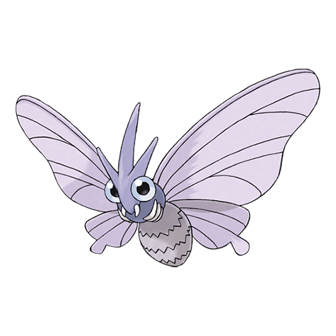

Веномот

Веномот — Покемон 1 поколения под номером 49 в Покедекс. Обитает он в регионе Канто и относится к Ядовитому и Жучиному типу. Это финальная стадия эволюции Покемона Веноната. Веномот ведет ночной образ жизни, то есть становится активным только ночью. Его любимая добыча — маленькие насекомые, привлечённые светом фонарей.
Тип и слабости:
Жук
Ядовитый
Эволюция
# 049 Веномот
Финальная стадия